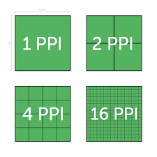

Een pixel, of beeldpunt, is het kleinste element van een digitaal beeld. Elke pixel heeft een kleur die wordt bepaald door verschillende kleurmodellen. Hoe meer pixels een afbeelding heeft, hoe hoger de resolutie en hoe scherper het beeld.

Resolutie
Resolutie verwijst naar het aantal pixels in een afbeelding, meestal uitgedrukt in termen van breedte × hoogte (bijvoorbeeld 1920 × 1080). Hogere resolutie betekent meer detail, maar ook grotere bestandsgrootte.
RGB Kleurmodel
Het RGB (Rood, Groen, Blauw) kleurmodel wordt gebruikt voor schermen zoals monitors, televisies en camera's. Kleuren worden gemaakt door de intensiteit van de drie primaire kleuren te combineren. Elke kleurwaarde kan variëren van 0 tot 255, wat resulteert in meer dan 16 miljoen mogelijke kleuren.
CMY-K Kleurmodel
Het CMY-K (Cyaan, Magenta, Geel en Zwart) kleurmodel wordt gebruikt voor drukwerk. Dit subtractieve model werkt door licht van wit papier te absorberen. De K staat voor zwart, omdat een mengsel van Cyaan, Magenta en Geel in de praktijk geen perfect zwart oplevert.